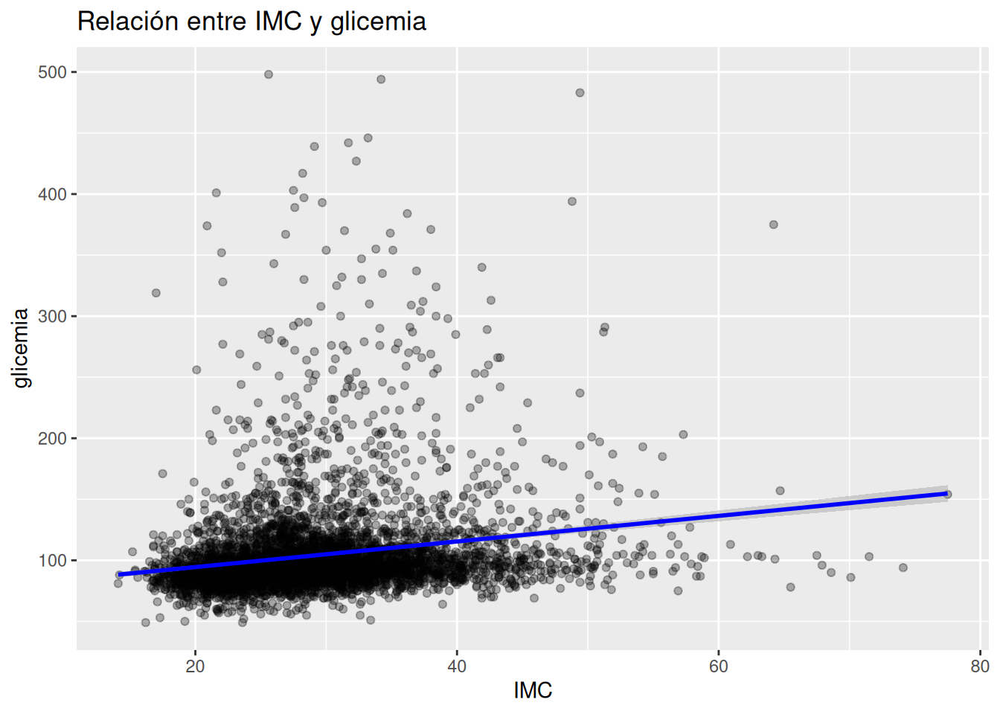
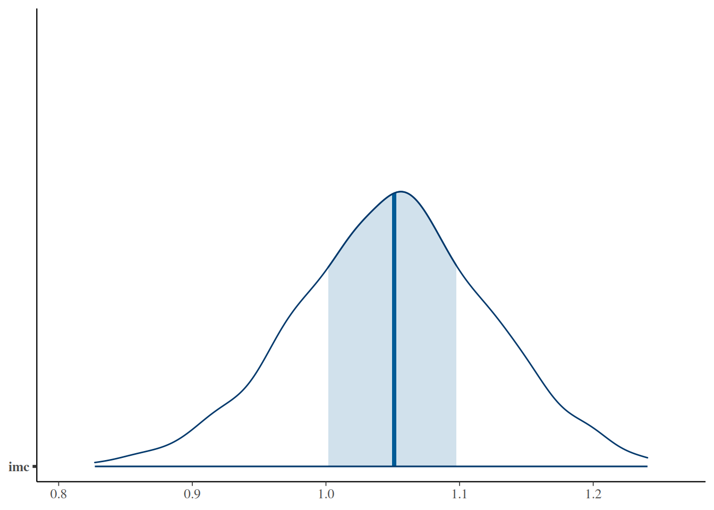
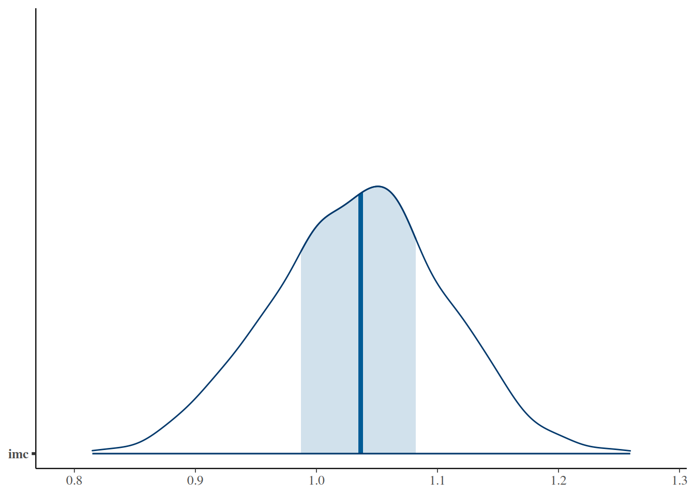
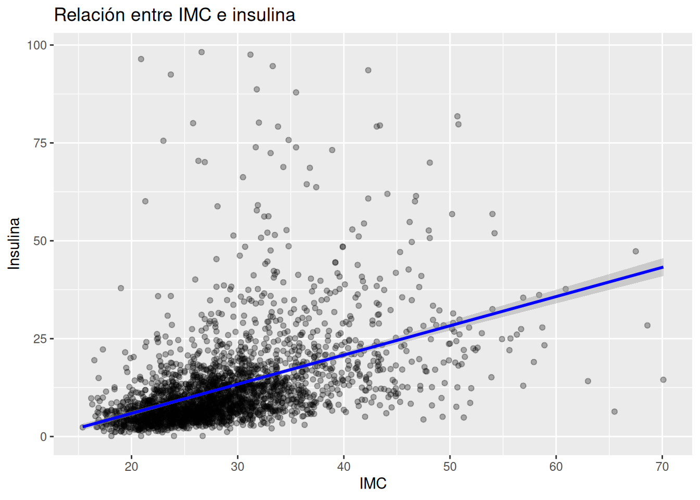

set.seed(123)
# Crear 80 pacientes
n <- 80
# Simaular imc e insulina (en relación con imc)
datos_sim <- tibble(
imc = rnorm(n, mean = 28, sd = 4),
insulina = 5 + 0.6 * imc + rnorm(n, 0, 3)
)13.- Priors
1. Intuición (SIN código)
Imagina que estás en consulta.
Llega un paciente con obesidad abdominal, sedentario, con antecedentes familiares de diabetes. Antes de pedir cualquier examen, ya tienes una idea en tu cabeza:
👉 “Este paciente probablemente tiene resistencia a la insulina”
👉 “Su riesgo de diabetes es alto”
Eso es un prior.
¿Qué es un prior?
Un prior es lo que creemos antes de ver los datos.
No es adivinanza. No es subjetividad sin fundamento.
Es:
- experiencia clínica
- fisiopatología
- evidencia previa
- sentido común médico
👉 En medicina, nunca empezamos desde cero.
¿Por qué esto es importante?
En estadística clásica, se asume implícitamente que empezamos sin información previa.
Pero eso no es realista.
👉 Un médico SIEMPRE tiene una idea previa.
Bayes simplemente hace algo muy poderoso:
👉 Hace explícito ese conocimiento previo
Tipos de priors
🔹 1. Prior débil (weak prior)
Es como decir:
“No estoy muy seguro, pero tengo una idea general”
Ejemplo:
- Sabes que el IMC promedio suele estar alrededor de 25–30
- Pero no quieres forzar demasiado el modelo
👉 Dejas que los datos hablen
🔹 2. Prior informativo
Es como decir:
“Estoy bastante seguro de esto”
Ejemplo:
- Sabes que la insulina aumenta con el IMC
- Tienes evidencia fisiopatológica fuerte
👉 Guías al modelo con conocimiento clínico
Relación clave
El corazón del análisis bayesiano es:
👉 Posterior = Prior + Datos
Pero no es una suma simple. Es una combinación inteligente.
Idea fundamental del capítulo
👉 Si los datos son muy fuertes → dominan
👉 Si los datos son débiles → el prior importa más
Analogía clínica
Piensa en un diagnóstico:
- Paciente típico + síntomas claros → el diagnóstico es obvio (datos dominan)
- Paciente ambiguo → tu experiencia pesa más (prior domina)
👉 El análisis bayesiano funciona igual que el razonamiento clínico
2. Ejemplo simple (simulación en R)
Vamos a construir una situación sencilla:
Queremos estimar la relación entre IMC e insulina.
Sabemos clínicamente que:
👉 A mayor IMC → mayor insulina (resistencia a la insulina)
Simulación
Modelo 1: prior débil
# Crear modelo débil
modelo_debil <- stan_glm(
insulina ~ imc,
data = datos_sim,
prior = normal(0, 10), # prior es cuánto espero que cambie la
# insulina por cada punto de imc
prior_intercept = normal(0, 20), # prior_intercept es la insulina
# base cuando imc es igual a cero
chains = 2,
iter = 1000,
refresh = 0
)Modelo 2: prior informativo
# Crear modelo informativo
modelo_informativo <- stan_glm(
insulina ~ imc,
data = datos_sim,
prior = normal(0.5, 0.2), # Espero que la insulina aumente 0.5 por
# cada punto de imc. Incertidumbre = 0.2
prior_intercept = normal(5, 2), # La insulina de base es 5 cuando
# imc es cero. Con incertidumbre=2
chains = 2,
iter = 1000,
refresh = 0
)👉 Aquí estamos diciendo:
“Creo que la pendiente es positiva y cercana a 0.5”
Comparación
posterior_interval(modelo_debil) 5% 95%
(Intercept) -1.8625325 6.2914680
imc 0.5534275 0.8369485
sigma 2.5238069 3.3006238Interpretación:
Por cada punto de imc, la insulina aumenta entre 0.55 y 0.84 puntos. En este rango la media de insulina varía entre -1.8 y 6.2
posterior_interval(modelo_informativo) 5% 95%
(Intercept) -1.2191106 6.1309477
imc 0.5334967 0.7981484
sigma 2.5219588 3.3335806¿Qué deberías observar?
- Ambos modelos apuntan en la misma dirección
- El modelo informativo suele ser:
- más estable
- menos disperso
- El intervalo se achica un poco
👉 El prior “empuja” ligeramente el resultado
3. Ejemplo aplicado con NHANES con IMC y glicemia
Ahora llevemos esto a datos reales.
Queremos analizar:
👉 Relación entre IMC y glicemia
Preparación de datos
# Seleccionar sólo los datos que voy a usar
datos <- df_obesidad %>%
select(BMXBMI, LBXSGL) %>%
drop_na() %>%
rename(
imc = BMXBMI,
glicemia = LBXSGL
)
# Filtrar los pacientes con imc monor de 100 y glicemia menor de 1000
datos <- datos %>%
filter(
imc <= 100,
glicemia <= 500
)Exploración rápida
# Exploración rápida de imc vs insulina
ggplot(datos, aes(x = imc, y = glicemia)) +
geom_point(alpha = 0.3) +
geom_smooth(method = "lm", color = "blue") +
labs(
title = "Relación entre IMC y glicemia",
x = "IMC",
y = "glicemia"
)
Modelo 1: prior débil
# Crear un modelo con prior débil
modelo_nhanes_debil <- stan_glm(
glicemia ~ imc,
data = datos,
prior = normal(0, 10),
prior_intercept = normal(90, 20),
chains = 2,
iter = 1000,
refresh = 0
)Modelo 2: prior informativo
# Crear un modelo con prior informativo
modelo_nhanes_info <- stan_glm(
glicemia ~ imc,
data = datos,
prior = normal(0.8, 0.3),
prior_intercept = normal(90, 10),
chains = 2,
iter = 1000,
refresh = 0
)👉 Aquí estamos incorporando conocimiento clínico:
- IMC ↑ → glicemia ↑
- No esperamos una relación negativa
Comparación
# Intervalo posterior débil
posterior_interval(modelo_nhanes_debil) # produce: 5% 95%
(Intercept) 70.0274134 77.119495
imc 0.9265791 1.166538
sigma 37.1287780 38.260767# Intervalo posterior informativo
posterior_interval(modelo_nhanes_info) # produce: 5% 95%
(Intercept) 70.4827110 77.351413
imc 0.9150578 1.148332
sigma 37.0588423 38.252670Interprestación
El prior casi no cambió nada porque los datos son fuertes. Sigma me indica que dos personas con el mismo imc pueden tener diferencias de glicemia de más o menos 37-38mg/dl. Por ejemplo, con un mismo imc una persona podría tener 60 y otra 140mg/dl, tomando en cuenta una media de 100mg/dl
Visualización sugerida
# Visualizar con prior débil
mcmc_areas(
as.matrix(modelo_nhanes_debil),
pars = "imc"
)
# Visualizar con prior informativo
mcmc_areas(
as.matrix(modelo_nhanes_info),
pars = "imc"
)
Interpretación de los gráficos
La línea vertical azul indica el promedio o la mediana de la variación de glicemia por cada punto de imc. Las franjas azules suelen indicar dónde está el 50% de la población.
Qué deberías notar
- Ambos modelos probablemente muestran:
👉 pendiente positiva
- Pero el modelo informativo:
- reduce incertidumbre
- evita estimaciones extremas
👉 El prior actúa como una “guía clínica”
4. Ejemplo aplicado con NHANES con IMC e insulina
Ahora llevemos esto a comparar IMC vs insulina
Queremos analizar:
👉 Relación entre IMC e insulina
Preparación de datos
datos <- df_obesidad %>%
select(BMXBMI, LBXIN) %>%
drop_na() %>%
rename(
imc = BMXBMI,
insulina = LBXIN
)
# Filtrar los pacientes con imc monor de 100 y glicemia menor de 1000
datos <- datos %>%
filter(
imc <= 100,
insulina <= 100
)Exploración rápida
# Exploración rápida de imc vs insulina
ggplot(datos, aes(x = imc, y = insulina)) +
geom_point(alpha = 0.3) +
geom_smooth(method = "lm", color = "blue") +
labs(
title = "Relación entre IMC e insulina",
x = "IMC",
y = "Insulina"
)
Modelo 1: prior débil
# Modelar con prior débil
modelo_imc_debil <- stan_glm(
imc ~ insulina,
data = datos,
prior = normal(0, 1),
prior_intercept = normal(25, 10),
chains = 2,
iter = 1000,
refresh = 0
)Modelo 2: prior informativo
# Modelar con prior informativo
modelo_imc_info <- stan_glm(
imc ~ insulina,
data = datos,
prior = normal(0.2, 0.1),
prior_intercept = normal(25, 5),
chains = 2,
iter = 1000,
refresh = 0
)Comparación
# Mostrar modelo débil
posterior_interval(modelo_imc_debil) # produce: 5% 95%
(Intercept) 24.8679759 25.4818167
insulina 0.2726964 0.3097634
sigma 6.2809749 6.5816667# Mostrar modelo informativo
posterior_interval(modelo_imc_info) # produce: 5% 95%
(Intercept) 24.8966458 25.4959757
insulina 0.2723556 0.3077418
sigma 6.2764186 6.5796939Interpretación
Sigma significa la desviación estándar de la media. Es decir para cierta insulina hay una media y, alrededor de esa media, hay una desviación de +-6 puntos de imc. Por ejemplo una media de 28 tiene pacientes alrededor de entre 22 y 34 de imc.
5. Interpretación clínica
Este es el punto clave del capítulo.
Lo que acabas de hacer
No solo “corriste un modelo”.
👉 Incorporaste conocimiento clínico explícitamente:
- resistencia a la insulina
- fisiopatología de obesidad
Qué significa el coeficiente
Si obtienes algo como:
👉 pendiente ≈ 0.3
Significa:
Por cada aumento de 1 en IMC, la insulina aumenta ~0.3 (en promedio)
Pero lo importante NO es el número exacto
👉 Es la distribución
- rango plausible
- incertidumbre
- consistencia con fisiología
Insight clave
Si ambos modelos (débil vs informativo):
- dan resultados similares
👉 los datos son fuertes
Si cambian mucho:
👉 el prior está influyendo bastante
Traducción clínica directa
Esto es exactamente lo que haces en consulta:
- tienes una hipótesis (prior)
- ves datos (laboratorio)
- ajustas tu creencia (posterior)
Mensaje final
👉 No estás “forzando” el modelo
Estás haciendo explícito algo que ya haces:
👉 pensar clínicamente antes de ver los datos